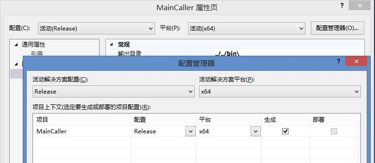
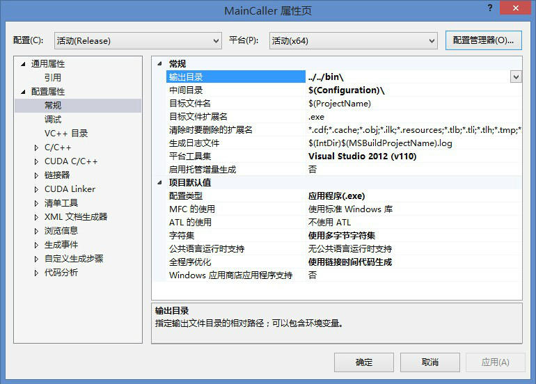
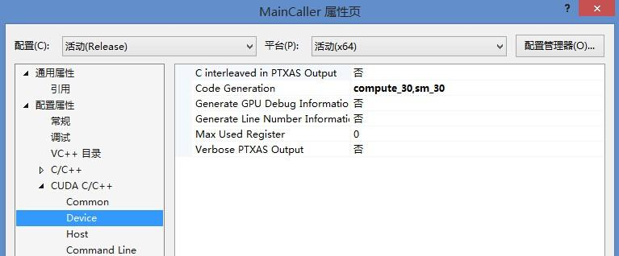
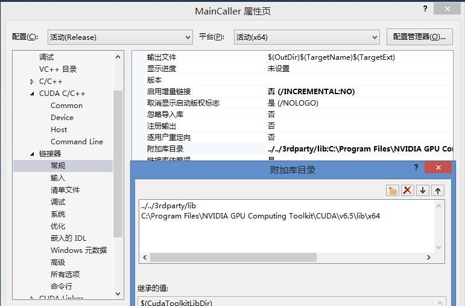
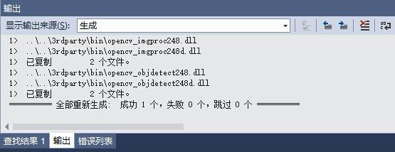
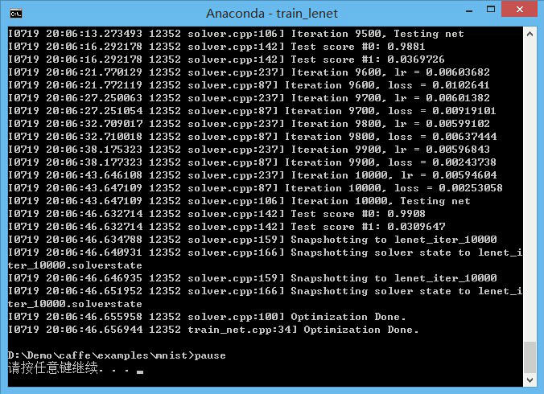

Caffe配置指南 on Windows8.1+CUDA6.5+VS2013
特别提醒：
1. 强烈建议在配置使用 Caffe 和 Cuda-Convnet 的时候，使用 Linux 操作系统！！！除非你很熟悉 C++ /CUDA 和 Python ，并且可以自行修改和Fix代码中的Bug。
2. 本贴截稿于2014年7月19日，新版Caffe 可能程序会有差别，本贴仅作为参考，不做标准，不对后续版本负责，且停止更新。
该指南旨在自我记录，并为需要的同学做一个参考，不是专业严格的技术指南，所以吐槽请绕道。不要再纠结为什么不用Linux了，没玩过Linux的，还要再学Linux那就是折磨，而且没有那么多时间去折腾系统，还是应该把精力花在有用的地方，So....。严格来说，这个不算VS2013下的版本，之前编译的时候，就出现了版本不兼容的问题，如果要完美的运行VS2013应该还需要去重新编译一下各种库文件。这里我是先装了VS2013，而且配置过cuda-convnet在上面，所以不想卸载了，另外又装了一个VS2012，然后就可以在VS2013的属性里使用VS2012的编译和模板。至少界面是VS2013了...，反正硬盘还够。
PS：顺便说一下，除了“平台工具集”那里稍微调整一下，本指南可以直接用在VS2012下，就不需要装VS2013了
致谢
1. 感谢UC Berkeley 的大神 @Yangqing Jia ，开发并开源了这个让全世界人民都受益的 Caffe
2. 感谢 @niuzhiheng ，同学提供了caffe在windows下的的Visual Studio 2012的工程文件，为我们这些痛恨Linux的小朋友提供了便利
3. 感谢涂涂同学，ParadiseLost同学，金露同学的耐心指导
4. 感谢为本文提供各种开源软件，库文件和编译器的各种公司和大神们~
准备工作：
1.Visual Studio 2013 ，这个东西任何一个学生和老师，都可以用你的edu邮箱去 Microsoft Dreamspark (https://www.dreamspark.com/) 网站免费下载正版软件，感觉微软对于科研的贡献居功至伟。（当然为了保护版权，大家仅作为科研使用，就不要传播了）
2.这里可以推荐大家一个基于Visual Studio的Python IDE：PTVS（Python Tools for Visual Studio） ( http://pytools.codeplex.com/releases ),支持VS2010，VS2012和VS2013
3. CUDA 6.5 RC ( https://developer.nvidia.com/cuda-toolkit )（CUDA的最新版本，因为用的是VS2013所以必须要6.5版本之后的才能支持, 幸运的是nVidia就在上个月刚刚发布，因为是最新版本，所以需要申请为开放人员，大概有1个小时的账号审核周期，耐心等待）。本文的GPU使用的是GTX 770，理论上支持CUDA的GPU应该都可以，但没有测试过。
4.caffe的Windows版本的Visual Studio 2012 project 文件：
Caffe-windows：https://github.com/niuzhiheng/caffe#known-issues
Dependencies ：http://dl.dropboxusercontent.com/u/3466743/caffe-vs2012/dependency-20140624.7z
PS: 如果上面两个文件的被墙了，可以移步我的百度云：http://pan.baidu.com/s/1c0EgGj2 （但官网总是会有最新版）
这个Dependencies包含了大量的.dll, .lib, .h，就是诸如opencv，boost，libopenblas，leveldb等的一个大集合
5.其中4项的两个文件分别解压放到一个文件夹下，比如：D:\Demo\caffe （合并在一起）
配置 cuda-convnet工程：
1. 编辑解决方案源文件“caffe\build\MSVC\MainBuilder.vcxproj"，第 52 行和 344 行。注意此处要根据自己安装的CUDA的信息来进行设置。
<Import Project="$(VCTargetsPath)\BuildCustomizations\CUDA 6.5.props" />
<Import Project="$(VCTargetsPath)\BuildCustomizations\CUDA 6.5.targets" />
2. 重新载入项目caffe\build\MSVC\MainBuilder.sln，修改项目的配置管理器中的解决方案配置：Release，平台：x64：
3. 修改：属性-配置属性-常规
目标文件扩展名：.exe
平台工具集：Visual Studio 2012 (v110)
配置类型：应用程序(.exe)
4. 配置工程的属性，这里Caffe的windows工程作者配置写的比较好，所以基本上不需要做太多的设置，前面操作没有问题，照我的图操作，基本上就没有问题了，细节如下：
工程 - 属性 - 配置属性 - CUDA C/C++ - Device - Code Generation ：这一项需要根据你的GPU的计算能力来设置，具体可以参考：https://developer.nvidia.com/cuda-gpus
工程 - 属性 - 配置属性 - 链接器 - 常规：
5. 一切设置完，就可以重新生成工程，祈祷上帝，佛祖，耶稣，圣母玛利亚保佑，不报错吧!
出现这个字样，就可以恭喜你了！！这中间可能会有无数的Warning，直觉上暂时可以忽略，，，
至此配置工程完毕，跑一个例程激励自己一下吧。（这里仅以MNIST为例，其他的数据集可以参考完成）
1.打开文件夹caffe\examples\mnist\ ，会发现一个“get_mnist_leveldb.bat”的文件，理论上运行会联网去下载数据集，可是我这里是没法成功，不管是通过翻墙，还是VPN。所以，请点右键-编辑，你会看到下载地址，粘贴到浏览器就搞定了。（或者直接点击下载地址：mnist-leveldb.7z ）同样如果被墙了，请移步百度云：http://pan.baidu.com/s/1dDjC621
2.命令提示符下，目录切换到caffe\examples\mnist\ ，输入train_lenet.bat，程序开始运行
运行结果还是很理想的，在Caffe下跑了10000次迭代：
GTX770 GPU：190s
i7-4770K CPU：620s